Halo 2: La Evolución de una Leyenda
Introducción
Halo 2 (2004) elevó la saga a nuevos niveles con una narrativa más compleja, gráficos revolucionarios y el innovador modo multijugador en Xbox Live. La historia continúa inmediatamente después de los eventos de Halo CE, con la Tierra siendo atacada por primera vez por el Covenant mientras el Jefe Maestro y el Inquisidor (un Elite deshonrado ahora conocido como el Arbiter) siguen caminos paralelos que convergerán en un destino común.
Este juego introdujo mecánicas revolucionarias como el emparejamiento online, el sistema de clan y el doble empuñamiento de armas, estableciendo estándares para toda una generación de shooters.
Misiones Principales
El Cairo
La misión inicial donde el Jefe Maestro defiende la estación orbital El Cairo de un ataque Covenant. Aquí recibimos por primera vez el rifle de batalla BR55 y presenciamos la ceremonia de condecoración interrumpida por el ataque. Destaca la épica secuencia donde activamos el detonador de la estación.
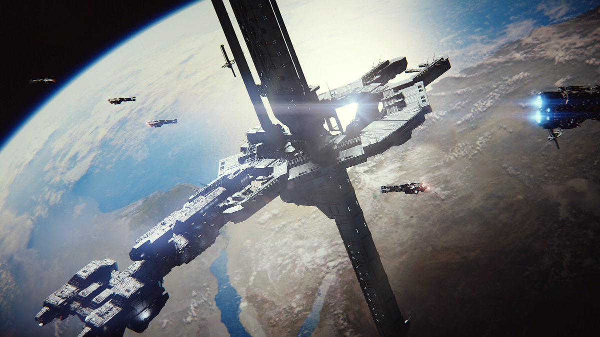Outskirts/Metro
El Jefe Maestro lucha en las calles de Nueva Mombasa contra las fuerzas Covenant invasoras. Estas misiones muestran por primera vez entornos urbanos en la saga y presentan combates intensos con vehículos como el Scorpion y el Wraith.
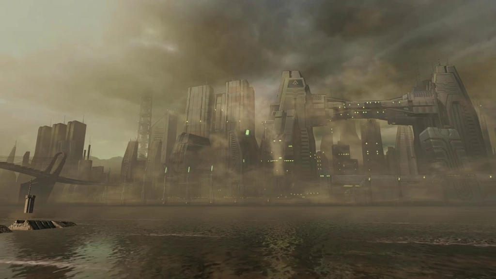El Arbiter
Primera misión jugable como el Inquisidor, ahora convertido en el Arbiter. Exploramos las intrigas políticas del Covenant y conocemos a los Profetas de la Verdad, la Piedad y la Misericordia. Esta misión establece el tono más oscuro y político de Halo 2.
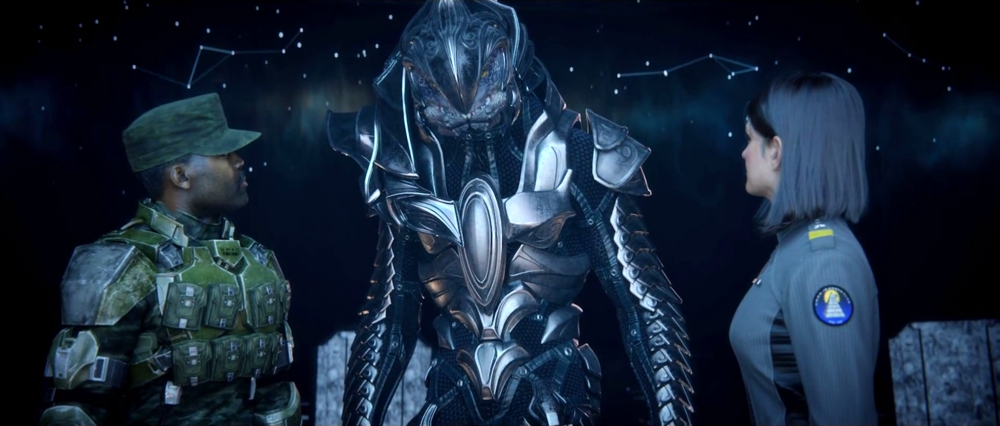Delta Halo
Una de las misiones más icónicas, donde el Jefe Maestro aterriza en el segundo anillo Halo descubierto. Combates épicos contra los Brutes y la memorable secuencia del Warthog atravesando el puente mientras explota.
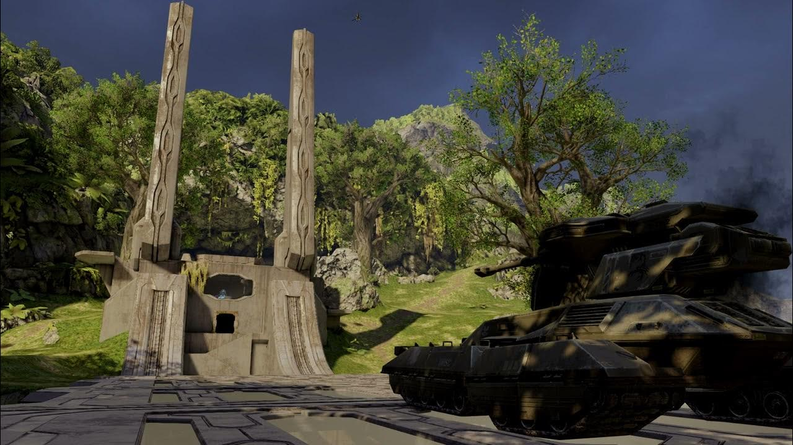Alto Caridad
El Arbiter se infiltra en la capital móvil del Covenant para detener a los Profetas. Esta misión muestra la magnificencia y decadencia de la sociedad Covenant, con entornos arquitectónicos impresionantes y encuentros con Gravemind.
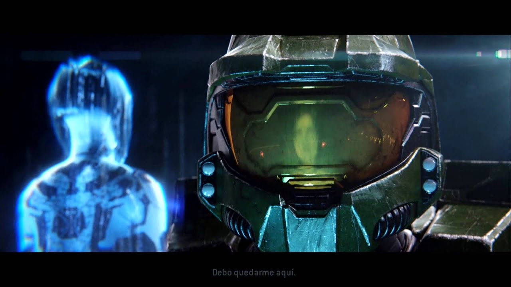El Gran Viaje
La misión final donde el Jefe Maestro y el Arbiter se unen para detener el activamiento de los anillos Halo. Combates intensos contra Tartarus y los Brutes, culminando con el cliffhanger más famoso de la saga.
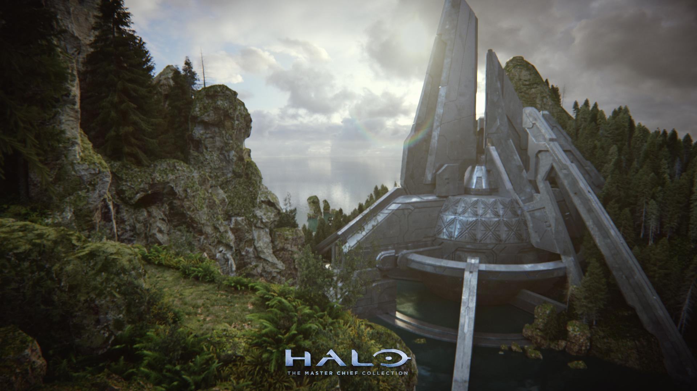Personajes Clave
| Personaje | Rol | Importancia | Imagen |
|---|---|---|---|
| Jefe Maestro (John-117) | Protagonista | Defensor de la Tierra y héroe del UNSC |  |
| El Arbiter (Thel 'Vadam) | Protagonista | Ex-Inquisidor Covenant que descubre la verdad sobre los Halo | 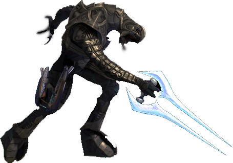 |
| Cortana | IA | Compañera del Jefe Maestro, infectada parcialmente por el Flood | 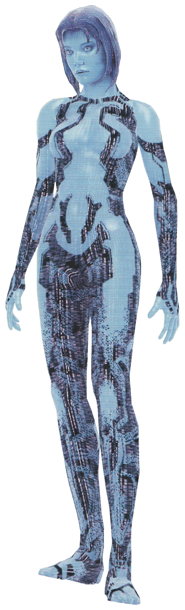 |
| Profeta de la Verdad | Antagonista | Líder del Covenant que busca activar los Halo | 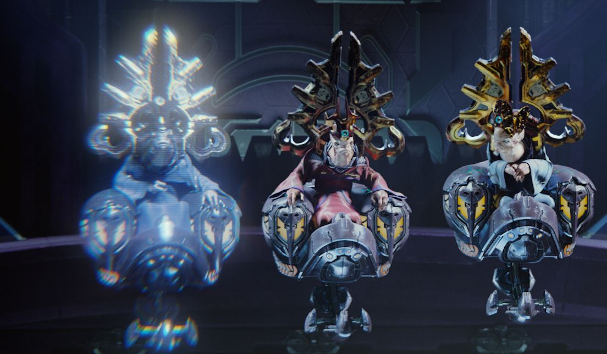 |
| Tartarus | Antagonista | Líder de los Brutes que ejecuta las órdenes de los Profetas | 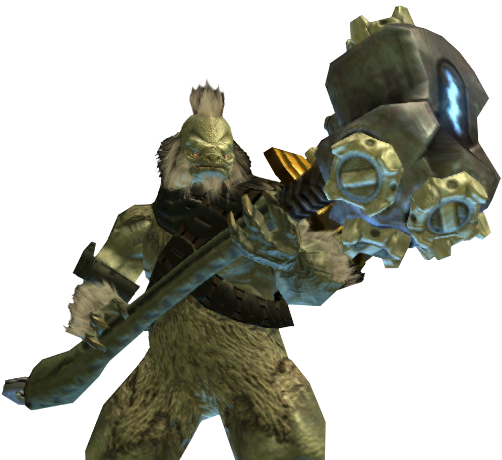 |
| Sargento Johnson | Aliado | Marine veterano que ayuda en varias misiones | 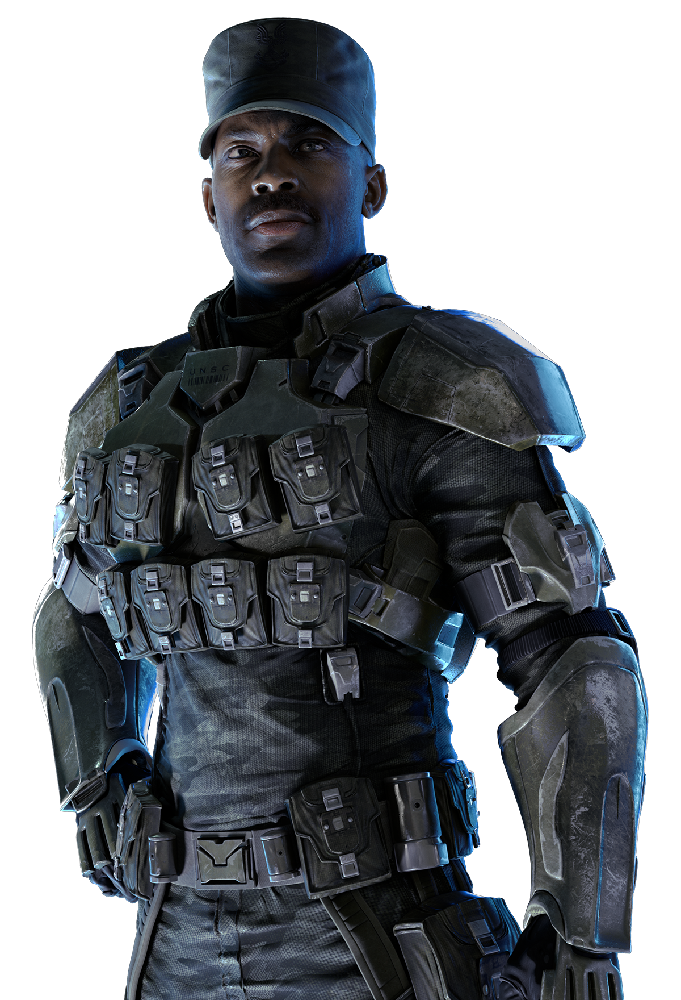 |
| Miranda Keyes | Aliado | Hija del Capitán Keyes y oficial del UNSC | 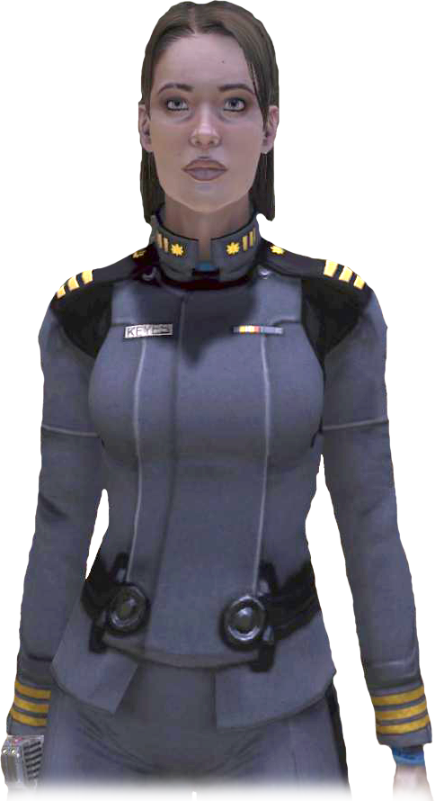 |
| Gravemind | Antagonista | Entidad colectiva del Flood que manipula eventos | 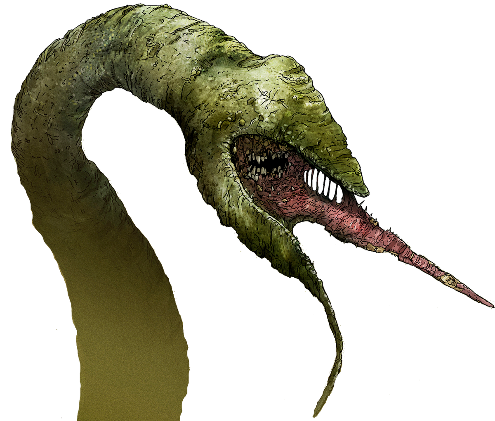 |
Nuevas Armas y Vehículos
Rifle de Batalla BR55 (Doble)
Rifle de precisión con ráfaga de 3 disparos. Preciso a media y larga distancia, puede empuñarse doblemente.
Pistola Magnum M6C (Doble)
Versión mejorada de la M6D, menos potente pero con mayor cadencia y capacidad de doble empuñamiento.
Rifle de Plasma Covenant (Doble)
Versión mejorada del rifle de plasma, con mayor cadencia y capacidad de doble empuñamiento.
Espada Energética
Arma cuerpo a cuerpo letal, ahora disponible para los jugadores. Capaz de matar con un solo golpe.
Lanzador de Needler (Doble)
Ahora puede empuñarse doblemente, aumentando dramáticamente su poder destructivo.
Banshee Mejorado
Versión más ágil del caza Covenant, con ataques de bombardeo adicionales.
Spectre
Vehículo Covenant equivalente al Warthog, con cañón de plasma y capacidad para 4 pasajeros.
Wraith Anti-Aéreo
Versión especial del tanque Covenant con cañones antiaéreos.
Facciones del Covenant
Elites (Sangheili)
Antigua casta guerrera líder, ahora en conflicto con los Brutes. Usan armadura variada y espadas de energía.
Unidades: Minor, Major, Ultra, Zealot, Ranger, Honor Guard
Brutes (Jiralhanae)
Nueva casta favorita de los Profetas. Más brutales pero menos estratégicos que los Elites.
Unidades: Brute Minor, Brute Major, Brute Captain, Chieftain
Drones (Yanme'e)
Insectoides voladores que atacan en enjambres. Armados con rifles de plasma.
Unidades: Drone Minor, Drone Major
Profetas (San 'Shyuum)
Líderes religiosos del Covenant. La Tríada está compuesta por Verdad, Piedad y Misericordia.
Unidades: Profeta Menor, Profeta Mayor
Calaveras (Skulls)
Modificadores de Juego en Halo 2
Las calaveras en Halo 2 (y su versión Anniversary) ofrecen modificadores que alteran la experiencia de juego:
Efectos de las Calaveras
- Boom: Los enemigos explotan violentamente al morir
- Grunt Birthday Party: Los Grunts explotan en confeti con disparos en la cabeza
- Iron: Muerte permanente (reinicio de nivel al morir)
- Black Eye: Los escudos solo se recargan con daño cuerpo a cuerpo
- Blind: Oculta el HUD y la mira
- Fog: Desactiva el sensor de movimiento
- Mythic: Enemigos con el doble de salud
- Sputnik: Física exagerada en cuerpos y objetos
- IWHBYD: Activa diálogos raros y divertidos
Encontrar estas calaveras requiere exploración exhaustiva de los niveles, con algunas escondidas en lugares casi inaccesibles.
Las calaveras añaden profundidad al juego y permiten personalizar la experiencia para mayor desafío o diversión.
Legado de Halo 2
Halo 2 marcó un antes y después en los shooters con sus innovaciones:
- Xbox Live: Revolucionó el multijugador online con emparejamiento automático y sistema de clans
- Doble empuñamiento: Mecánica innovadora que permitía combinar armas
- Narrativa dual: Primera vez que se jugaba desde la perspectiva Covenant
- Secuencias cinematográficas: Cutscenes con calidad de película
- Forge (precursor): Bases para el posterior editor de mapas
- Bots: Primer juego en usar bots realistas en multijugador
El juego vendió más de 8 millones de copias y su multijugador mantuvo una comunidad activa durante más de una década, hasta el cierre de los servidores originales de Xbox Live.
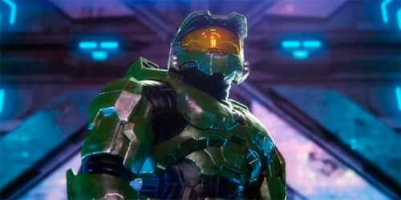